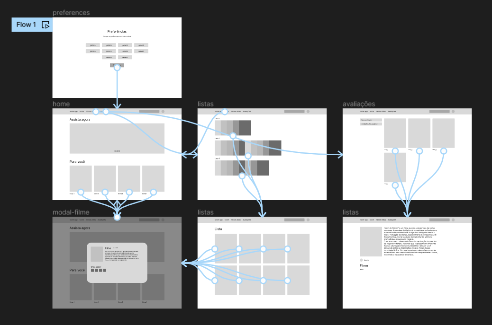
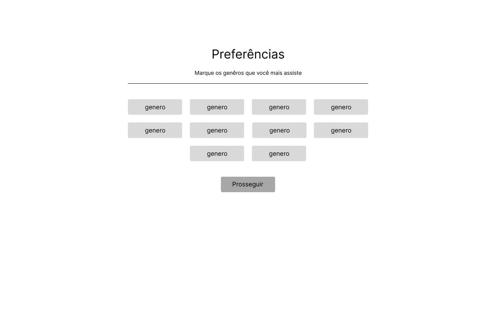
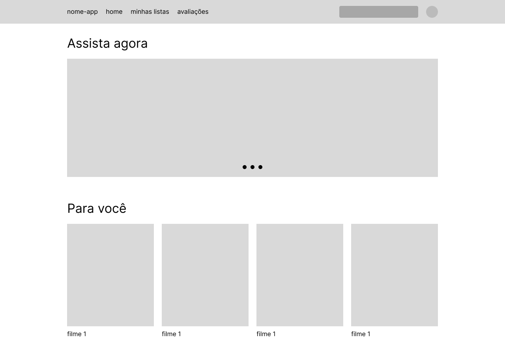
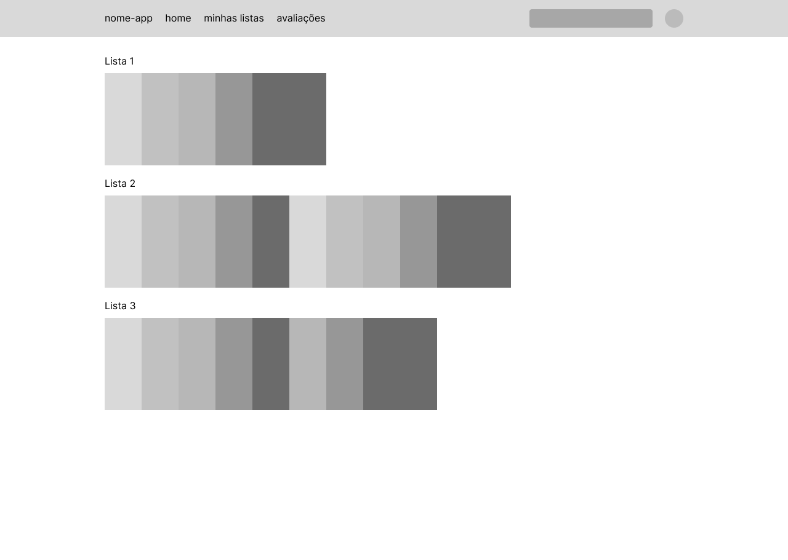
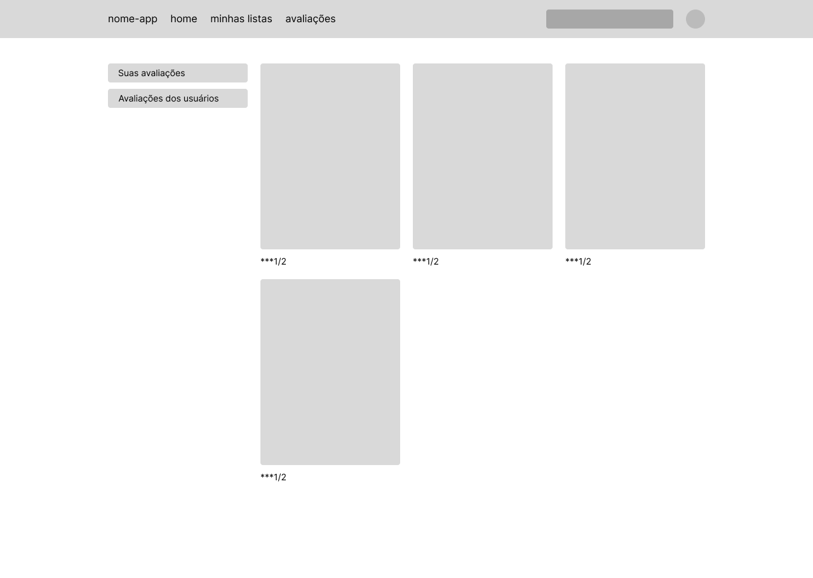
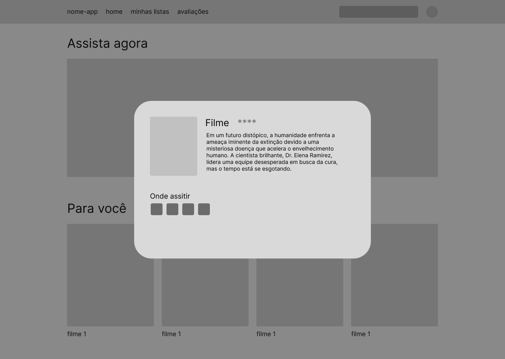
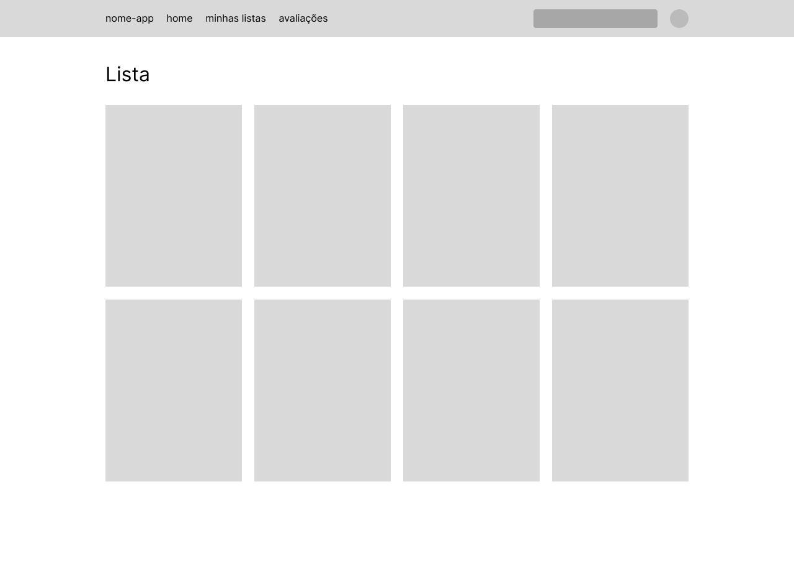
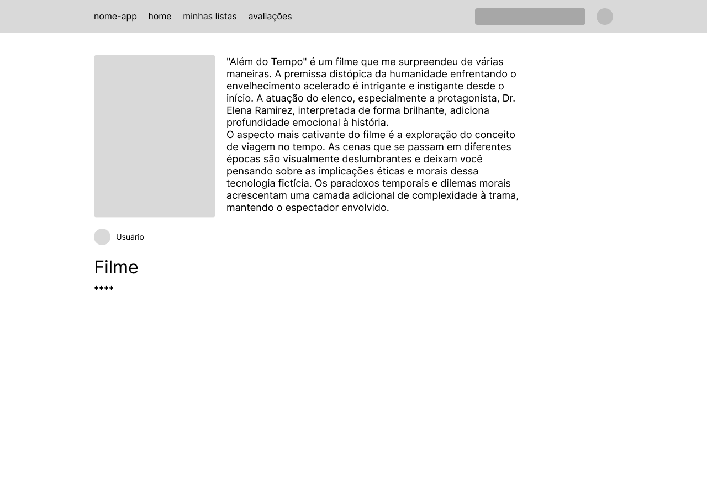
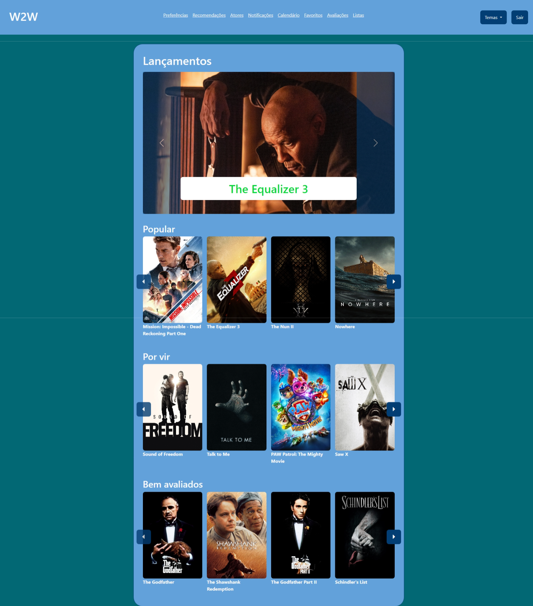
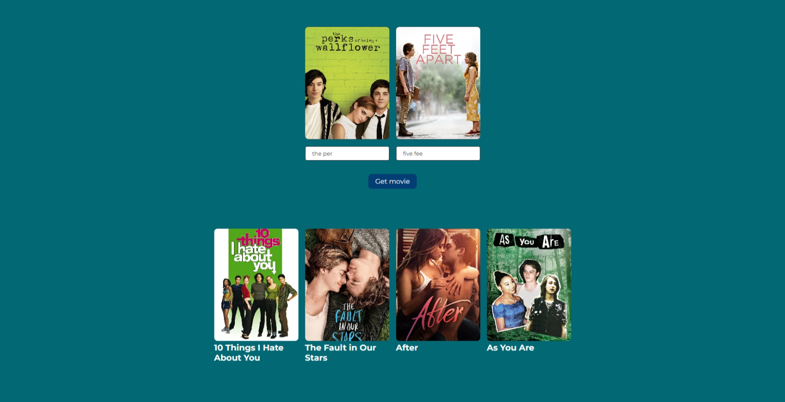

Introdução
Projeto sobre recomendações de filmes.
Informações Gerais
- Projeto: What to Watch
- Repositório GitHub: Trabalho Interdisciplinar I What to Watch
- Membros da equipe:
Contexto
Um pouco sobre nosso projeto.
Problema
Os usuários frequentemente sentem-se sobrecarregados pela vasta seleção de filmes disponíveis e lutam para encontrar opções que correspondam ao seu gosto e humor no momento.
Objetivos
Desenvolver uma plataforma web de recomendação de filmes que forneça sugestões altamente personalizadas com base nas preferências e histórico de visualização do usuário, além de incorporar uma interface intuitiva que permite aos usuários avaliar, revisar e filtrar filmes com facilidade.
Justificativa
A demanda por recomendações de filmes mais precisas e personalizadas é evidente, dada a insatisfação dos usuários com os sistemas atuais.
Público-alvo
Cinéfilos ávidos que estão constantemente buscando novos filmes para assistir e ampliar sua filmografia e usuários casuais que querem uma recomendação rápida para uma noite de cinema em casa.
Concepção (Design Thinking)
Detalhes do processo de discovery do projeto.
Apresente o processo de discovery do projeto. Com foco na experiência do usuário, esse processo abrange a compreensão do contexto do problema e das características do usuário, a definição do problema, a geração de ideias, a prototipagem e a elaboração de uma proposta de solução
Processo de Design Thinking
O arquivo que se segue apresenta o resultado desse processo.
Apresente o processo de Design Thinking realizado pelo grupo e documentado por meio do software Miro. No documento apresentado, devem ser incluídos: (1) a matriz CSD, (2) o mapa de stakeholders, (3) as personas, (4) as respectivas propostas de valor e (5) o processo de ideação identificando as ideias levantadas e sua priorização.
Especificações do Projeto
Documentação das especificações do projeto.
Apresente as especificações do projeto, incluindo as histórias de usuário e os requisitos funcionais e não funcionais.
Histórias de Usuários
Com base na análise das personas foram identificadas as seguintes histórias de usuários:
Apresente aqui as histórias de usuário que são relevantes para o projeto de sua solução. As Histórias de Usuário consistem em uma ferramenta poderosa para a compreensão e elicitação dos requisitos funcionais e não funcionais da sua aplicação. Se possível, agrupe as histórias de usuário por contexto, para facilitar consultas recorrentes à essa parte do documento.
EU COMO...PERSONA |
QUERO/PRECISO...FUNCIONALIDADE
|
PARA...MOTIVO/VALOR |
|---|---|---|
| Usuário do sistema | Receber recomendações de filmes | Assistir filmes interessantes |
| Usuário que gosta de interagir | Seção de comentários e sistema de avaliação | Compartilhar minha opinião e ajudar outros usuários a fazerem escolhas informadas |
| Usuário planejador | Criar e gerenciar listas de filmes que quero assistir no futuro | Organizar minha futura sessão de filmes e não esquecer de títulos interessantes que descobri |
| Administrador | Alterar permissões | Permitir que possam administrar contas |
Requisitos
As tabelas que se seguem apresentam os requisitos funcionais e não funcionais que detalham o escopo do projeto.
Com base nas Histórias de Usuário, enumere os requisitos da sua solução. Classifique esses requisitos em dois grupos:
- Requisitos Funcionais (RF): correspondem a uma funcionalidade que deve estar presente na plataforma (ex: cadastro de usuário).
- Requisitos Não Funcionais (RNF): correspondem a uma característica técnica, seja de usabilidade, desempenho, confiabilidade, segurança ou outro (ex: suporte a dispositivos iOS e Android).
Lembre-se que cada requisito deve corresponder à uma e somente uma característica alvo da sua solução. Além disso, certifique-se de que todos os aspectos capturados nas Histórias de Usuário foram cobertos.
Requisitos Funcionais
| ID | Descrição do Requisito | Prioridade |
|---|---|---|
| RF-000 | O sistema deve permitir o registro e autenticação de usuários usando um endereço de e-mail e senha. | ALTA |
| RF-001 | O sistema deve ter uma tela inicial com os filmes divididos por relevância, lançamento e os mais bem avaliados. | ALTA |
| RF-002 | O sistema deve permitir um pesquisa baseada em preferências. | MÉDIA |
| RF-003 | O sistema deve oferecer um sistema para um cadastro de avaliações. | MÉDIA |
| RF-004 | O sistema deve permitir cadastrar filmes que não estão na nossa base de dados. | MÉDIA |
| RF-005 | O sistema deve permitir cadastrar listas de filmes com temas definidos pelo usuário. | BAIXA |
| RF-006 | O sistema deve permitir trocar o tema da aplicação. | BAIXA |
| RF-007 | O sistema deve notificar usuários de filmes novos na plataforma. | BAIXA |
| RF-008 | Apresentar iformações de um filme específico. | BAIXA |
| RF-009 | Recomendações baseada em duas escolhas. | BAIXA |
| RF-009 | O sistema deve ser integrado com o calendário. | BAIXA |
| RF-010 | O sistema deve permitir compartilhar avaliacoes nas redes sociais | BAIXA |
Requisitos Não-Funcionais
| ID | Descrição do Requisito | Prioridade |
|---|---|---|
| RNF-001 | Usabilidade: A interface do usuário deve ser intuitiva e de fácil navegação, com design responsivo para adaptar-se a dispositivos móveis. | MÉDIA |
| RNF-002 | Desempenho: As recomendações de filmes devem ser geradas em no máximo 5 segundos após a solicitação do usuário. | ALTA |
| RNF-003 | Segurança: Os dados pessoais dos usuários, como e-mail e senha, devem ser armazenados de forma criptografada. | BAIXA |
| RNF-004 | Usabilidade: Apresentar filmes em que atores apareceram. | MÉDIA |
Projeto de Interface
Artefatos relacionados com a interface e a interacão do usuário na proposta de solução.
Apresente a ideia de interface que está sendo prevista para o projeto. Inclua os wireframes, o user/screen flow e o protótipo interativo.
User/Screen Flow e Protótipo interativo
Artefatos relacionados com a interface e a interacão do usuário na solução proposta.
O fluxo de usuário (User Flow) é uma técnica que permite ao desenvolvedor mapear todo fluxo de telas do site ou app. Essa técnica funciona para alinhar os caminhos e as possíveis ações que o usuário pode fazer junto com os membros de sua equipe. 
Um protótipo interativo apresenta o projeto de interfaces
e permite ao usuário navegar pelas funcionalidades como se
estivesse lidando com o software pronto. Veja o exemplo a
seguir.
Wireframes
Protótipo de telas do sistema em baixa fidelidade (rascunhos).
Os Wireframes são protótipos das telas da aplicação usados em design de interface para sugerir a estrutura de um site web e seu relacionamentos entre suas páginas. Um wireframe web é uma ilustração semelhante ao layout de elementos fundamentais na interface.       
Metodologia
Detalhes sobre a organização do grupo e o ferramental empregado.
Nesta parte do documento, você deve apresentar a metodologia adotada pelo grupo, descrevendo o processo de trabalho baseado nas metodologias ágeis, a divisão de papéis e tarefas, as ferramentas empregadas e como foi realizada agestão de configuração do projeto via GitHub.
Coloque detalhes sobre o processo de Design Thinking e a implementação do Framework Scrum seguido pelo grupo. O grupo poderá fazer uso de ferramentas on-line para acompanhar o andamento do projeto, a execução das tarefas e o status de desenvolvimento da solução.
Ferramentas
Relação de ferramentas empregadas pelo grupo durante o projeto.
Liste as ferramentas empregadas no desenvolvimento do projeto, justificando a escolha delas, sempre que possível. Inclua itens como: (1) Editor de código, ferramentas de comunicação, ferramentas de diagramação, plataformas de hospedagem, entre outras.
| Ambiente | Plataforma | Link de Acesso |
|---|---|---|
| Processo de Design Thinking | Miro | https://miro.com/timenetflix |
| Repositório de código | GitHub | https://github.com/timenetflix |
| Hospedagem do site | Heroku | Sem hospodagem sprint 1 |
| Protótipo Interativo | MavelApp ou Figma | https://figma.com/timenetflix |
Gestão do Projeto
Divisão de papéis no grupo e apresentação da estrutura da ferramenta de controle de tarefas (Kanban).
Apresente a divisão de papéis e tarefas entre os membros do grupo. Informe quem é o Scrum Master, o Product Owner e os desenvolvedores. Informe também quem é o responsável pela documentação do projeto.
Apresente o quadro de gerenciamento do time (Kanban), seu formato e as experiências na utilização dessa ferramenta (GitHub Projects)

...... COLOQUE AQUI O SEU TEXTO ......
Controle de Versão
Estrutura do fluxo de trabalho no ambiente do GitHub.
Discuta como a configuração do projeto foi feita na
ferramenta de versionamento (GitHub). Exponha como a
gerência de tags, merges, commits e branchs é realizada.
Discuta como a gerência de issues foi realizada.

...... COLOQUE AQUI O SEU TEXTO ......
Solução
Esta seção apresenta todos os detalhes da solução criada no projeto.
Apresente cada uma das funcionalidades que a aplicação fornece tanto para os usuários quanto aos administradores da solução.
Inclua, para cada funcionalidade, itens como: (1) titulos e descrição da funcionalidade; (2) Estrutura de dados associada; (3) o detalhe sobre as instruções de acesso e uso.
Video do Projeto
O vídeo a seguir traz uma apresentação do problema que a equipe está tratando e a proposta de solução.
O video de apresentação é voltado para que o público externo possa conhecer a solução. O formato é livre, sendo importante que seja apresentado o problema e a solução numa linguagem descomplicada e direta.
Utilize o recurso de compartilhamento via embed e inclua o vídeo logo abaixo.
Funcionalidades
Esta seção apresenta as funcionalidades da solução.
Apresente cada uma das funcionalidades que a aplicação fornece tanto para os usuários quanto aos administradores da solução.
Inclua, para cada funcionalidade, itens como: (1) titulos e descrição da funcionalidade; (2) Estrutura de dados associada; (3) o detalhe sobre as instruções de acesso e uso.
Funcionalidade 1 - Tela Inicial
Tela inicial para acesso ao conteúdo do site.
-
Instruções de acesso:
- Abra o site e efetue o login
- Acesse o menu principal e escolha a opção Cadastros
- Em seguida, escolha a opção Contatos
 Funcionalidade 2 - Recomendação de filmes
Recomenda filmes de acordo com dois passados pelo usuário
-
Instruções de acesso:
- Abra o site e efetue o login
- Acesse o menu principal e escolha a opção Cadastros
- Em seguida, escolha a opção Contatos

Funcionalidade 3 - Pesquisa por preferências
Permite a criação e o uso de preferências para pesquisar por filmes.
-
Instruções de acesso:
- Abra o site e efetue o login
- Acesse o menu principal e escolha a opção Preferências
- Selecione a aba de preferências a partir do menu principal. Na aba de preferências, preencha o formulário com as preferências desejadas ou utilize as preferências já salvas para obter os resultados. Caso não exista nenhuma preferência cadastrada, é exibida uma lista genérica de filmes. As informações são provenientes da API TMDB, até o momento da construção do site, a funcionalidade de pesquisa de filme por serviço de streaming e por palavra chave na API não está sendo considerada por parte do servidor da TBM, porém foi mantida caso o problema seja corrigido.

Estruturas de Dados
Descrição das estruturas de dados utilizadas na solução com exemplos no formato JSON.
Apresente as estruturas de dados utilizadas na solução tanto para dados utilizados na essência da aplicação quanto outras estruturas que foram criadas para algum tipo de configuração
Nomeie a estrutura, coloque uma descrição sucinta e apresente um exemplo em formato JSON.
Estrutura de Dados - Preferências
Preferências do usuário
"preferences": {
"include-adult": "true",
"preferred-languages": "pl",
"preferred-genres": "28",
"minimum-release-date": "2023-03-01",
"maximum-release-date": "",
"region": "",
"minimum-rate": "",
"maximum-rate": "",
"minimum-runtime": "",
"maximum-runtime": "",
"keywords": ""
}
Estrutura de Dados - Temas
Registro dos temas do sistema
"themes": {
"minecraft": {
"border": "#023E73",
"bg": "#026873",
"fg": "#62A1D9",
"text": "#FAFAFA",
"secundary-text" :"#F0F0F0",
"primary" :"#04D939"
}